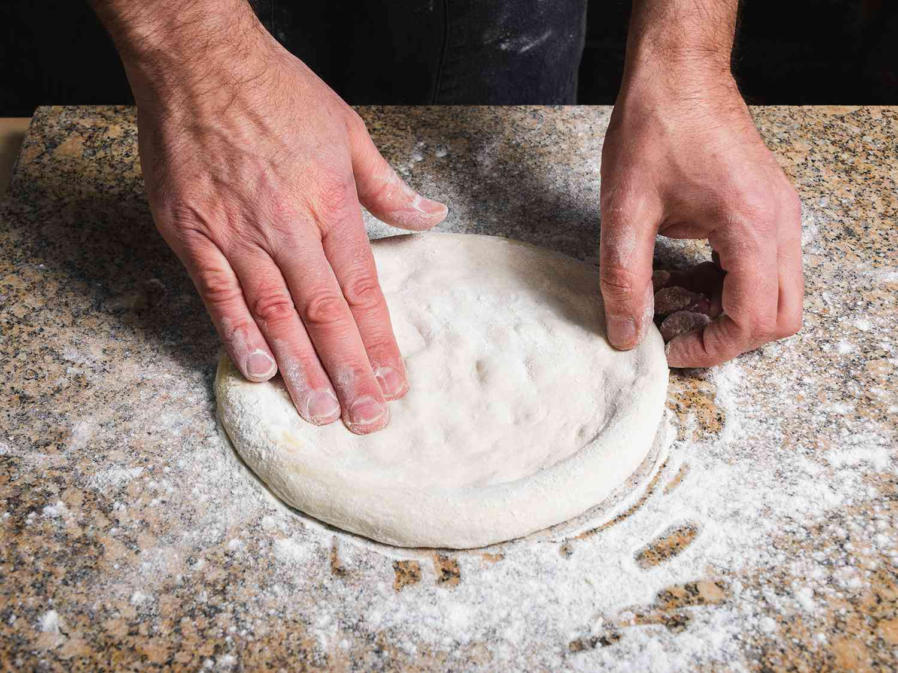

Pizza Dough

Pizza dough is the foundation of a great pizza, providing a crispy yet soft base
for your favorite toppings. With simple ingredients and a little patience, you can
make a perfect pizza crust at home for any occasion.
Ingredients:
- 500g all-purpose or bread flour
- 325ml warm water
- 1 packet (7g) instant yeast
- 1 teaspoon sugar
- 2 tablespoons olive oil
- 1 teaspoon salt
Instructions
- Activate the yeast:
- In a small bowl, combine warm water, sugar, and yeast. Stir gently.
- Let the mixture sit for 5-10 minutes until it becomes frothy.
- Prepare the dough:
- In a large mixing bowl, combine flour and salt.
- Gradually add the yeast mixture and olive oil to the flour.
- Mix until a dough forms, then knead on a floured surface for 8-10 minutes until smooth and elastic.
- Let the dough rise:
- Place the dough in a lightly oiled bowl and cover with a clean kitchen towel.
- Let it rise in a warm place for 1-2 hours, or until doubled in size.
- Shape the dough:
- After the dough has risen, punch it down to release air.
- Divide the dough into portions (if making multiple pizzas) and roll out to your desired thickness.
- Bake:
- Preheat your oven to 250°C (480°F) or as hot as it can go.
- Top the rolled-out dough with your favorite sauce, cheese, and toppings.
- Bake on a pizza stone or baking sheet for 7-10 minutes, or until the crust is golden and crisp.
Enjoy your delicious homemade pizza dough! 🍕